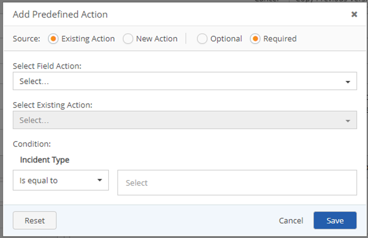
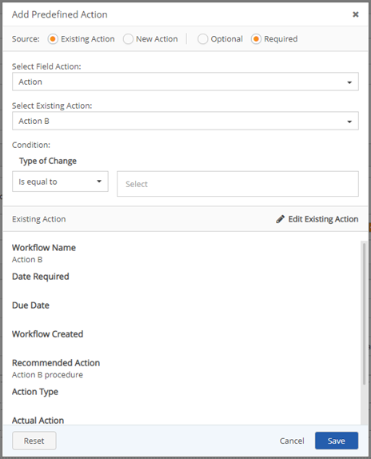
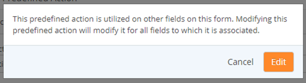
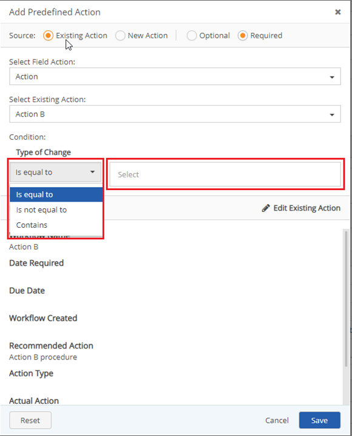

Editing an existing action so that it is required, allows administrators to tailor existing actions that users are required to follow as next actions for their specific situation or process when a condition is met.

If the field action selected does not have an existing action the Select Existing Action textbox is greyed out, and the following error message displays below “There are not currently any existing actions for this type of Field Action”

If users click Edit Existing Action and make changes, those changes are also made in the original predefined action and any other predefined action where the original predefined action is sourced.

If changes are not required, click Cancel.

Click Save.